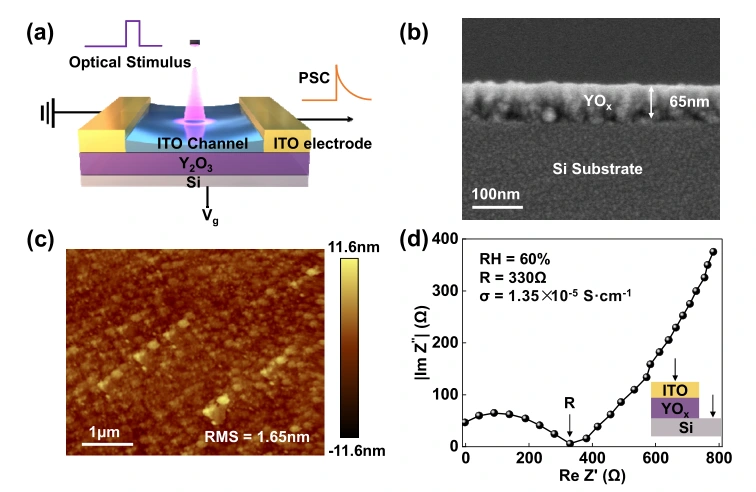
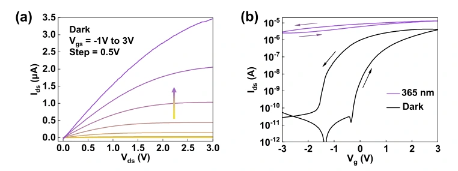
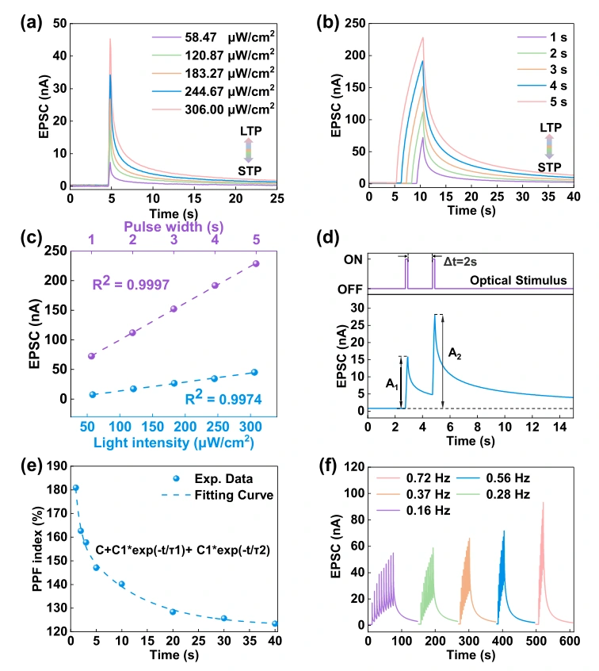
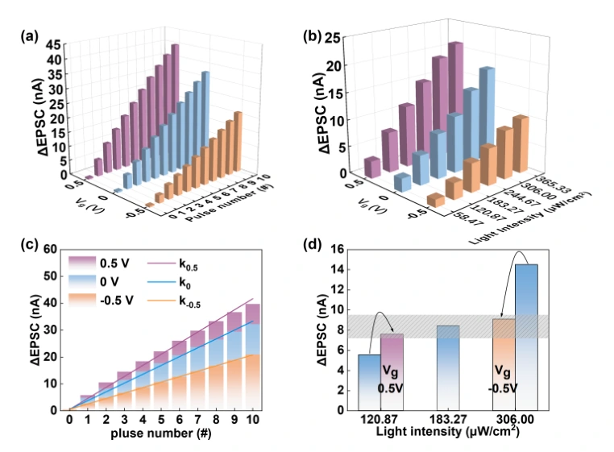
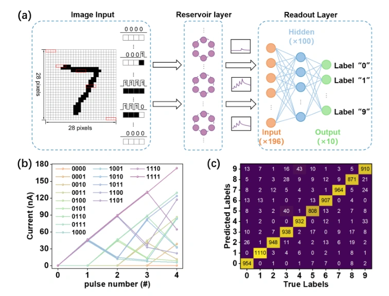

线性可调光电突触：在传感器内实现储备池计算
质子动态赋予沟道记忆
器件采用 YOₓ 电解质与 ITO 沟道，栅极通过离子重分布调节沟道电导。截面 SEM 显示电解质厚度约 65 nm，AFM 表面粗糙度约 1.65 nm；阻抗分析为电解质的质子传导提供证据，支撑栅控与时间动态的结合。

在同一晶体管中连接感知与存储
输出特性在低源漏电压下近似线性，支持良好的欧姆接触；转移曲线出现逆时针迟滞，作者归因于电解质中氢离子的缓慢弛豫。365 nm 紫外照射使 ITO 沟道电流增大，实现光信号到电信号的转换。

光刺激条件调节记忆强度
较弱或较短光脉冲产生较小 EPSC 并快速衰减；增强光强或延长脉宽可增加响应并延长衰减，体现短时向长时可塑性的转变。器件还表现成对脉冲易化，易化指数随间隔增加而减小；较高脉冲频率有利于电流积累。图中实验读出电压为 0.1 V。

线性栅调制扩展计算功能
不同栅压调节光脉冲引起的电流增量，电流增量随脉冲数量近似线性增长。作者利用栅调制演示基本加法、乘法，并通过调节栅压使强光和弱光下响应接近同一水平，模拟视觉光适应。

将四位光序列映射为十六种状态
将 MNIST 图像中的四个连续像素编码成四位光脉冲序列，形成 0000 至 1111 的 16 种输入。器件输出可分离的储备池电流状态，随后训练读出网络进行分类，报告总体识别准确率 93.42%。系统结合器件动态与读出层训练完成识别验证。

Linearly Tunable Optoelectronic Synaptic Transistor for In-Sensor Reservoir Computing
Zhengdong Jiang, Zhiyuan Luo, Kekang Liu, Peicheng Jiao, Wei Liu, Yanghui Liu
IEEE Transactions on Electron Devices 71 (2024), 5456–5460